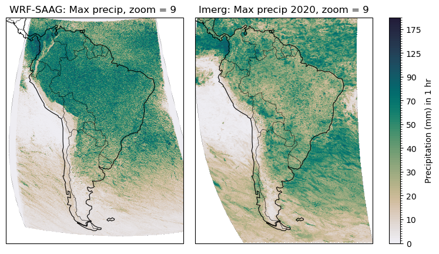

Pre-process data from multipe datasets to get data annual precip stats over South America
import cartopy.crs as ccrs
import intake
import uxarray as ux
import matplotlib.pyplot as plt
import cartopy.crs as ccrs
import cartopy.feature as cf
import cartopy.feature as cfeature
from matplotlib.colors import LinearSegmentedColormap
import numpy as np
import healpix as hp
import easygems.healpix as egh
import easygems as egm
import xarray as xr
import cmocean
import matplotlib as mpl
Compare datasets based on availability in the HEALPix format
Dataset |
Variable |
Long Name |
Units |
Frequency available |
Comments |
|---|---|---|---|---|---|
ERA5 |
|
Total precipitation |
m |
Monthly |
Monthly mean precipitation |
JRA3Q |
|
Mean total precipitation rate |
kg m⁻² s⁻¹ |
Monthly |
Daily mean total precipitation rate; hourly data available as |
IMERG |
|
Precipitation rate |
mm hr⁻¹ |
30 min |
Half-hourly precipitation intensity |
WRF-SAAG |
|
Total precipitation flux |
kg m⁻² s⁻¹ |
Hourly |
Accumulated precipitation flux; difference successive outputs for rates |
# Define the period of interest
start, end = '2020-01-01', '2020-12-31'
cat_url = "https://digital-earths-global-hackathon.github.io/catalog/catalog.yaml"
cat = intake.open_catalog(cat_url).NCAR
cat
NCAR:
args:
path: https://digital-earths-global-hackathon.github.io/catalog/NCAR/catalog.yaml
description: catalog as visible from NCAR
driver: intake.catalog.local.YAMLFileCatalog
metadata:
catalog_dir: https://digital-earths-global-hackathon.github.io/catalog
list(cat)
['CERES_EBAF',
'ERA5',
'IR_IMERG',
'JRA3Q',
'MERRA2',
'arp-gem-1p3km',
'arp-gem-2p6km',
'casesm2_10km_nocumulus',
'ew_dyamond3_2D',
'icon_d3hp003',
'icon_d3hp003aug',
'icon_d3hp003feb',
'icon_ngc4008',
'ifs_tco3999-ng5_deepoff',
'ifs_tco3999-ng5_rcbmf',
'ifs_tco3999-ng5_rcbmf_cf',
'ifs_tco3999_rcbmf',
'mpas_dyamond1',
'mpas_dyamond2',
'mpas_dyamond3',
'nicam_220m_test',
'nicam_gl11',
'scream-dkrz',
'scream2D_hrly',
'scream_lnd',
'scream_ne120',
'tracking-d3hp003',
'um_Africa_km4p4_RAL3P3_n1280_GAL9_nest',
'um_CTC_km4p4_RAL3P3_n1280_GAL9_nest',
'um_SAmer_km4p4_RAL3P3_n1280_GAL9_nest',
'um_SEA_km4p4_RAL3P3_n1280_GAL9_nest',
'um_glm_n1280_CoMA9_TBv1p2',
'um_glm_n1280_GAL9',
'um_glm_n2560_RAL3p3',
'wrf_conus',
'wrf_samerica']
Get seasonal precipitation intensity data from different models and obs
Obtain data
## Seasonal max precip over South America in 2020 ?
zoom_level = 9
%%time
ds_wrf_saag = cat.wrf_samerica(zoom=zoom_level).to_dask()
ds_wrf_saag
CPU times: user 1.62 s, sys: 76.4 ms, total: 1.7 s
Wall time: 1.79 s
/glade/u/apps/opt/conda/envs/2025-digital-earths-global-hackathon/lib/python3.12/site-packages/intake_xarray/base.py:21: FutureWarning: The return type of `Dataset.dims` will be changed to return a set of dimension names in future, in order to be more consistent with `DataArray.dims`. To access a mapping from dimension names to lengths, please use `Dataset.sizes`.
'dims': dict(self._ds.dims),
<xarray.Dataset> Size: 291GB
Dimensions: (cell: 394546, Time: 8784)
Coordinates:
* cell (cell) int64 3MB 786432 786433 786434 ... 3145725 3145726 3145727
crs float32 4B nan
* Time (Time) datetime64[ns] 70kB 2020-01-01 ... 2020-12-31T23:00:00
Data variables: (12/22)
LANDMASK (cell) float32 2MB dask.array<chunksize=(65536,), meta=np.ndarray>
clivi (Time, cell) float32 14GB dask.array<chunksize=(48, 65536), meta=np.ndarray>
clwvi (Time, cell) float32 14GB dask.array<chunksize=(48, 65536), meta=np.ndarray>
hflsd (Time, cell) float32 14GB dask.array<chunksize=(48, 65536), meta=np.ndarray>
huss (Time, cell) float32 14GB dask.array<chunksize=(48, 65536), meta=np.ndarray>
pr (Time, cell) float32 14GB dask.array<chunksize=(48, 65536), meta=np.ndarray>
... ...
rsutcs (Time, cell) float32 14GB dask.array<chunksize=(48, 65536), meta=np.ndarray>
sncvfa (Time, cell) float32 14GB dask.array<chunksize=(48, 65536), meta=np.ndarray>
swe (Time, cell) float32 14GB dask.array<chunksize=(48, 65536), meta=np.ndarray>
tas (Time, cell) float32 14GB dask.array<chunksize=(48, 65536), meta=np.ndarray>
uas (Time, cell) float32 14GB dask.array<chunksize=(48, 65536), meta=np.ndarray>
vas (Time, cell) float32 14GB dask.array<chunksize=(48, 65536), meta=np.ndarray>
Attributes:
FieldType: 104
MemoryOrder: XY
cell_methods: Time: mean
description: LAND MASK (1 FOR LAND, 0 FOR WATER)
domain_extent: (np.float32(-98.46912), np.float32(-17.530884), np.float3...
grid_mapping: healpix_nested
healpix_nside: 512
regrid_method: easygems_delaunay
stagger:
units: da_wrf_saag = ds_wrf_saag.pr
da_wrf_saag = da_wrf_saag.rename({'Time':'time'})
# da_wrf_saag
da_wrf_saag = da_wrf_saag.sel(time=slice(start,end))
da_wrf_saag
<xarray.DataArray 'pr' (time: 8784, cell: 394546)> Size: 14GB
dask.array<getitem, shape=(8784, 394546), dtype=float32, chunksize=(48, 65536), chunktype=numpy.ndarray>
Coordinates:
* cell (cell) int64 3MB 786432 786433 786434 ... 3145725 3145726 3145727
crs float32 4B nan
* time (time) datetime64[ns] 70kB 2020-01-01 ... 2020-12-31T23:00:00
Attributes:
domain_extent: (np.float32(-98.46912), np.float32(-17.530884), np.float3...
grid_mapping: healpix_nested
healpix_nside: 512
regrid_method: easygems_delaunay# da_wrf_saag.values
# ds_era5 = cat.ERA5(zoom=zoom_level).to_dask()
# da_era5 = ds_era5.tp
# da_era5 = da_era5.sel(time=slice(start,end))
# da_era5
# %%time
# # Has data from 2019 Aug 1 to 2020 Sep 1
# ds_scream2d = cat.scream2D_hrly(zoom=zoom_level).to_dask()
# da_scream2d = ds_scream2d.pr
# da_scream2d
# %%time
# ds_jra3q = cat.JRA3Q(zoom=zoom_level).to_dask()
# da_jra3q = ds_jra3q.mtpr
# da_jra3q = da_jra3q.sel(time=slice(start,end))
# da_jra3q
ds_imerg = cat.IR_IMERG(zoom= 9).to_dask()
da_imerg = ds_imerg.precipitation
da_imerg = da_imerg.sel(time = slice(start,end))
da_imerg
/glade/u/apps/opt/conda/envs/2025-digital-earths-global-hackathon/lib/python3.12/site-packages/intake_xarray/base.py:21: FutureWarning: The return type of `Dataset.dims` will be changed to return a set of dimension names in future, in order to be more consistent with `DataArray.dims`. To access a mapping from dimension names to lengths, please use `Dataset.sizes`.
'dims': dict(self._ds.dims),
<xarray.DataArray 'precipitation' (time: 17568, cell: 3145728)> Size: 221GB
dask.array<getitem, shape=(17568, 3145728), dtype=float32, chunksize=(1, 3145728), chunktype=numpy.ndarray>
Coordinates:
* cell (cell) int64 25MB 0 1 2 3 4 ... 3145724 3145725 3145726 3145727
crs float64 8B ...
* time (time) datetime64[ns] 141kB 2020-01-01 ... 2020-12-31T23:30:00
Attributes:
CodeMissingValue: -9999.9
DimensionNames: time,lon,lat
LongName: \nComplete merged microwave-infrared (gauge-adjusted)\...
Units: mm/hr
fullnamepath: /Grid/precipitation
long_name: precipitation
origname: precipitation
units: mm/hrConvert to HEALPIX
# da_wrf_saag.values
# ux_era5 = ux.UxDataset.from_healpix(da_era5.to_dataset(name='tp'))
# ux_jra3q = ux.UxDataset.from_healpix(da_jra3q.to_dataset(name='mtpr'))
# ux_imerg = ux.UxDataset.from_healpix(da_imerg.to_dataset(name='precipitation'))
# ux_wrf_saag = ux.UxDataset.from_healpix(da_wrf_saag.to_dataset(name='pr'))
# # 2. Pull out the UxDataArray for each variable
# da_era5_ux = ux_era5['tp']
# da_jra3q_ux = ux_jra3q['mtpr']
# da_imerg_ux = ux_imerg['precipitation']
# da_wrf_ux = ux_wrf_saag['pr']
# # da_wrf_ux
Subset to South America
# 3. Define South America bounding box and subset
lon_bounds = (-90, -30)
lat_bounds = (-60, 15)
lat_start = 15
lat_end = -60
lon_start = (360-90)%360
lon_end = (360-30)%360
lon_end
330
# sa_jra3q = da_jra3q.sel(latitude = slice(lat_start,lat_end),longitude= slice(lon_start,lon_end))
# sa_jra3q
# %%time
# sa_era5 = da_era5_ux.subset.bounding_box(lon_bounds, lat_bounds)
# sa_jra3q = da_jra3q_ux.subset.bounding_box(lon_bounds, lat_bounds)
# sa_imerg = da_imerg_ux.subset.bounding_box(lon_bounds, lat_bounds)
# sa_wrf = da_wrf_ux.subset.bounding_box(lon_bounds, lat_bounds)
# sa_wrf
# sa_wrf.values
Computations
Use UXarray for subsetting
%%time
ux_imerg = ux.UxDataset.from_healpix(da_imerg.to_dataset(name='pr'))
da_imerg_ux = ux_imerg['pr']
sa_imerg = da_imerg_ux.subset.bounding_box(lon_bounds, lat_bounds)
# sa_imerg
CPU times: user 27.9 s, sys: 607 ms, total: 28.5 s
Wall time: 5.68 s
## Resample to hourly and take max
sa_imerg_hr = sa_imerg.resample(time='h').sum()
sa_imerg_hrmax = sa_imerg_hr.max(dim='time')
sa_imerg_hrmax
<xarray.UxDataArray 'pr' (n_face: 293587)> Size: 1MB
dask.array<_nanmax_skip-aggregate, shape=(293587,), dtype=float32, chunksize=(293587,), chunktype=numpy.ndarray>
Coordinates:
cell (n_face) int64 2MB 786432 786433 786434 ... 3145725 3145726 3145727
crs float64 8B ...
Dimensions without coordinates: n_face## # 4) WRF-SAAG: pr already seems to be in mm/s
# (by inspecting the values)
sa_wrf_mm = da_wrf_saag*3600
sa_wrf_hrmax = sa_wrf_mm.max(dim='time')
sa_wrf_hrmax
<xarray.DataArray 'pr' (cell: 394546)> Size: 2MB
dask.array<_nanmax_skip-aggregate, shape=(394546,), dtype=float32, chunksize=(65536,), chunktype=numpy.ndarray>
Coordinates:
* cell (cell) int64 3MB 786432 786433 786434 ... 3145725 3145726 3145727
crs float32 4B nan### Rename n_face to cell
sa_imerg_hrmax = sa_imerg_hrmax.rename({'n_face': 'cell'})
/glade/derecho/scratch/harshah/tmp/ipykernel_68941/39560302.py:2: UserWarning: rename 'n_face' to 'cell' does not create an index anymore. Try using swap_dims instead or use set_index after rename to create an indexed coordinate.
sa_imerg_hrmax = sa_imerg_hrmax.rename({'n_face': 'cell'})
sa_imerg_hrmax
<xarray.UxDataArray 'pr' (cell: 293587)> Size: 1MB
dask.array<_nanmax_skip-aggregate, shape=(293587,), dtype=float32, chunksize=(293587,), chunktype=numpy.ndarray>
Coordinates:
cell (cell) int64 2MB 786432 786433 786434 ... 3145725 3145726 3145727
crs float64 8B ...### Convert uxda to xr.da
sa_imerg_hrmax = xr.DataArray(data=sa_imerg_hrmax.data,dims=['cell'],coords={'cell':sa_imerg_hrmax.cell,'crs':sa_imerg_hrmax.crs})
print(sa_imerg_hrmax)
<xarray.DataArray '_nanmax_skip-aggregate-ffbf440f67f053137fecc19e87e39f91' (
cell: 293587)> Size: 1MB
dask.array<_nanmax_skip-aggregate, shape=(293587,), dtype=float32, chunksize=(293587,), chunktype=numpy.ndarray>
Coordinates:
* cell (cell) int64 2MB 786432 786433 786434 ... 3145725 3145726 3145727
crs float64 8B ...
# # 1) ERA5: tp in m → mm, then monthly sum
# sa_era5_mm = sa_era5 * 1000
# sa_era5_mon = sa_era5_mm
# # 2) JRA-3Q: mtpr in kg m⁻² s⁻¹ = mm s⁻¹ → mm per day (but, monthly sum as already been performed)
# # daily mean rate * 86400 s/day → mm/day
# seconds_per_month = da_jra3q.time.dt.days_in_month * 24 * 3600
# da_jra3q_mm = da_jra3q* seconds_per_month
# da_jra3q_mon = da_jra3q_mm
# 3) IMERG: precip in mm/hr → mm per half-hour, then monthly sum
#
# da_imerg_hr = da_imerg.resample(time='H').sum()
# da_imerg_mon = da_imerg_mm.resample(time="ME").sum()
# # 4) WRF-SAAG: pr already seems to be in mm/s
# # (by inspecting the values)
# da_wrf_saag_mm = da_wrf_saag*3600
# %%time
# da_wrf_saag_mm.isel(time=700).values
---------------------------------------------------------------------------
NameError Traceback (most recent call last)
File <timed eval>:1
NameError: name 'da_wrf_saag_mm' is not defined
%%time
da_imerg.isel(time=500).values
CPU times: user 96 ms, sys: 20.1 ms, total: 116 ms
Wall time: 1.33 s
array([0., 0., 0., ..., 0., 0., 0.], shape=(3145728,), dtype=float32)
%%time
# Max precip (max taken over hourly and 30 min data)
fig, axs = plt.subplots(
ncols=2, figsize=(9, 5),
subplot_kw={'projection': ccrs.Robinson()},
gridspec_kw={'wspace': 0.02},
constrained_layout=False
)
# Define plot bounds
for ax in axs:
ax.set_extent([lon_start, lon_end, lat_end, lat_start],
crs=ccrs.PlateCarree())
cmap = cmocean.cm.rain
levels = np.concatenate([np.arange(0,50,1),np.arange(50,100,2),np.arange(100,205,5)])
norm = mpl.colors.BoundaryNorm(boundaries=levels,ncolors=cmap.N)
# cntr = egh.healpix_show(imerg_max,ax=ax,cmap=cmap,norm=norm)
# 1) WRF-SAAG
im0 = egh.healpix_show(sa_wrf_hrmax,ax=axs[0],cmap=cmap,norm=norm)
axs[0].add_feature(cf.COASTLINE, linewidth=0.8)
axs[0].add_feature(cf.BORDERS, linewidth=0.4)
axs[0].set_title("WRF-SAAG: Max precip, zoom = 9 ")
# 2) imerg
im1 = egh.healpix_show(sa_imerg_hrmax,ax=axs[1],cmap=cmap,norm=norm)
axs[1].add_feature(cf.COASTLINE, linewidth=0.8)
axs[1].add_feature(cf.BORDERS, linewidth=0.4)
axs[1].set_title("Imerg: Max precip 2020, zoom = 9")
# 3) Single colorbar for both plots
# Use the first image artist (im0) or the second (im1) - they share the same norm
cbar = fig.colorbar(
im0, # the QuadMesh / PolyCollection from healpix_show
ax=axs.tolist(), # span the colorbar across both axes
orientation="vertical",
fraction=0.046, # width of colorbar relative to figure
pad=0.04, # space between plot and colorbar
label="Precipitation (mm) in 1 hr"
)
plt.show()

CPU times: user 5min 16s, sys: 48.4 s, total: 6min 4s
Wall time: 9min 26s
# %%time
# # Max precip (max taken over hourly and 30 min data)
# fig, axs = plt.subplots(
# ncols=2, figsize=(9, 5),
# subplot_kw={'projection': ccrs.Robinson()},
# gridspec_kw={'wspace': 0.02},
# constrained_layout=False
# )
# # Define plot bounds
# for ax in axs:
# ax.set_extent([lon_start, lon_end, lat_end, lat_start],
# crs=ccrs.PlateCarree())
# # 1) WRF-SAAG
# im0 = egh.healpix_show(
# a_wrf_saag.mean(dim='time'),
# ax=axs[0]
# )
# axs[0].add_feature(cf.COASTLINE, linewidth=0.8)
# axs[0].add_feature(cf.BORDERS, linewidth=0.4)
# axs[0].set_title("WRF-SAAG: Max precip in 2020, zoom = 9 ")
# # 2) imerg
# im1 = egh.healpix_show(
# da_imerg.mean(dim='time'),
# ax=axs[1]
# )
# axs[1].add_feature(cf.COASTLINE, linewidth=0.8)
# axs[1].add_feature(cf.BORDERS, linewidth=0.4)
# axs[1].set_title("Imerg: Max precip in 2020, zoom = 9")
# # 3) Single colorbar for both plots
# # Use the first image artist (im0) or the second (im1) - they share the same norm
# cbar = fig.colorbar(
# im0, # the QuadMesh / PolyCollection from healpix_show
# ax=axs.tolist(), # span the colorbar across both axes
# orientation="vertical",
# fraction=0.046, # width of colorbar relative to figure
# pad=0.04, # space between plot and colorbar
# label="Precipitation (mm/hr)"
# )
# plt.show()
Ignore below
print(da_wrf_saag.attrs.get("units", "no units attribute"))
no units attribute
# %%time
# np.max(sa_imerg_mon.values)
# # Now pick out 2020’s wettest month for each dataset
# annual_max = {
# #"ERA5": sa_era5_mon.max(dim="time"),
# "JRA3Q": sa_jra3q_mon.max(dim="time"),
# "IMERG": sa_imerg_mon.max(dim="time"),
# "WRF": sa_wrf_mon.max(dim="Time"),
# }
# np.max(sa_jra3q_mon.max(dim="time").values)
# # Pack the three datasets
# plot_dict = {
# #"ERA5": annual_max["ERA5"],
# "JRA-3Q": annual_max["JRA3Q"],
# "WRF": annual_max["WRF"]
# }
# # South America bounds
# lon_min, lon_max = -90, -30
# lat_min, lat_max = -60, 15
# # Create 1×3 figure
# fig, axes = plt.subplots(
# 1, 2, figsize=(10, 5),
# subplot_kw={"projection": ccrs.PlateCarree()},
# constrained_layout=True
# )
# # Loop and plot
# for ax, (name, da) in zip(axes, plot_dict.items()):
# ax.set_extent([lon_min, lon_max, lat_min, lat_max], ccrs.PlateCarree())
# ax.add_feature(cfeature.LAND, facecolor="lightgray", zorder=0)
# ax.add_feature(cfeature.COASTLINE, linewidth=0.5)
# ax.add_feature(cfeature.BORDERS, linestyle=":")
# # Build and add the PolyCollection with default colormap
# pc = da.to_polycollection(
# projection=ccrs.PlateCarree(),
# periodic_elements="exclude"
# )
# ax.add_collection(pc)
# ax.set_title(name, fontsize=14)
# # Shared colorbar
# cbar = fig.colorbar(
# pc, ax=list(axes),
# orientation="horizontal", pad=0.05, aspect=40
# )
# cbar.set_label("Precip in wettest month of 2020 (mm)", fontsize=12)
# plt.show()